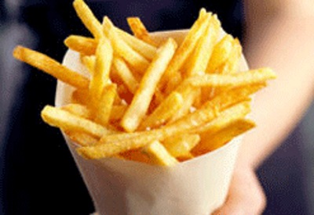

¿Quienes Somos?

En Parada 28 Papas encontrarás frescas papas fritas cortadas a mano. Todas las órdenes se sirven en conos de papel y pueden ser complementadas con deliciosos aderezos. El concepto es un fast food de venta de conos de papa, que incluyen 20 variedades de papas condimentadas de maneras diferentes para consumir al paso. Su fortaleza radica en el fácil manejo, un producto sencillo para consumo al paso, una marca que ofrece alta calidad y mucho sabor en un segmento que se expande rápidamente.